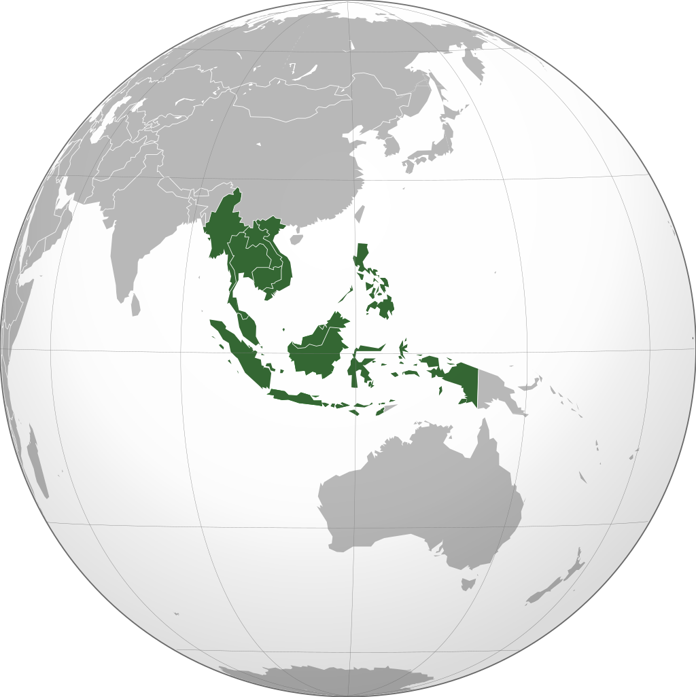
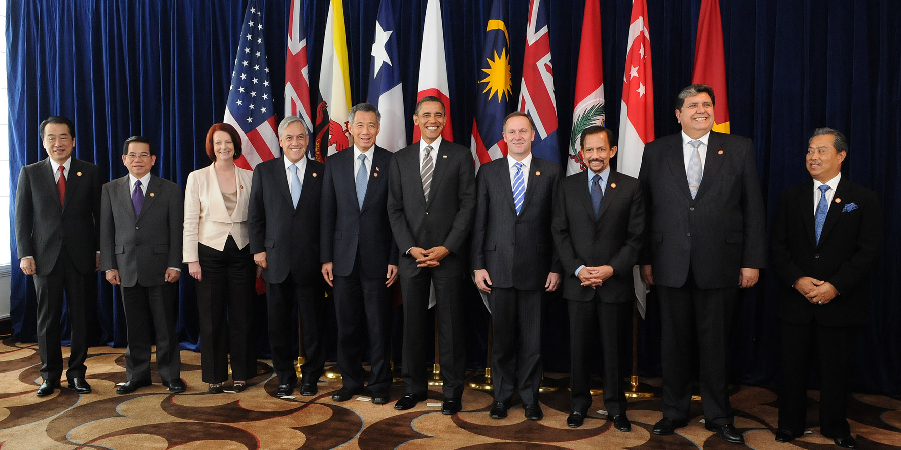
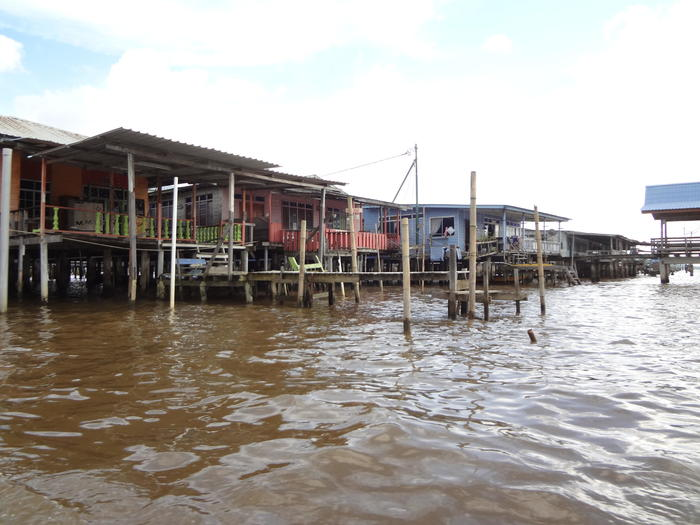
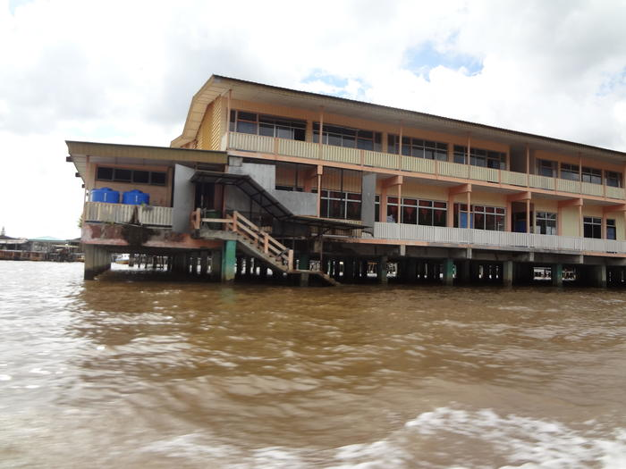
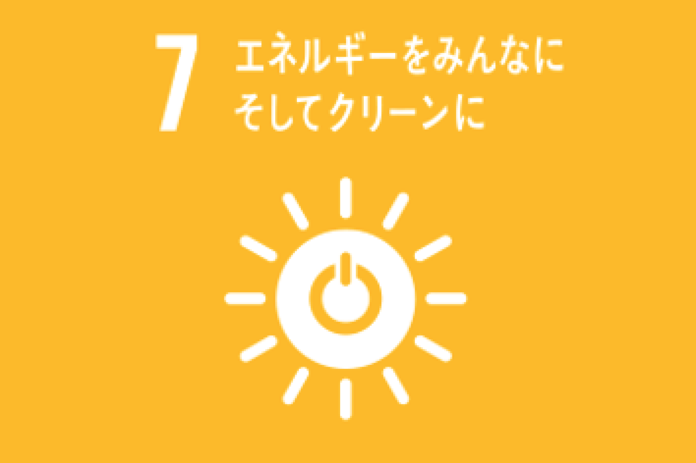
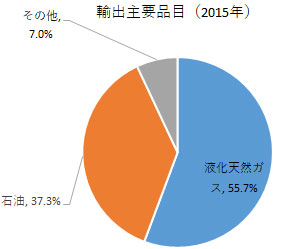
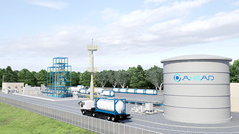

位置：東南アジアのボルネオ島（カリマンタン島）北部
首都：バンダルスリブガワン

人口：約45万人
面積：5765㎢（ほぼ三重県と同じ）
日本からの距離：約4,260km
国土の七割が未開拓の自然に覆われている また、石油や天然ガスが取れる
2010年時点でのGDP（国内総生産）：119億ドル（鳥取県の半分ほど）
その半分が石油、天然ガス部門が占めている また、輸出のほぼすべてをそれが占めている、典型的なモノカルチャー経済
自然豊かな国であり、ウル・トゥンブロン国立公園という自然豊かな場所で行われるネイチャーツアーが人気
東南アジア諸国連合（ASEAN）加盟国であり、一人当たりのGDPはシンガポールに次ぐ76,743ドル!

また、日本と同じく環太平洋パートナーシップ協定（TPP）にも加盟している

↑右から三番目のおひげが立派な人が現ブルネイ国王兼首相ハサナル・ボルキアさん（本名はマレー語でHaji Hassanal Bolkiah Mu'izzaddin Waddaulah）

ここには４万人（ブルネイの人口の実に十分の一）もの人が住んでおり、

学校（上画像）や商店、さらには水の上なのに消防署もある

先ほども言った通り、ブルネイは輸出を天然ガス、石油に頼っている
そのため、近年では経済の多様化と持続可能なエネルギー開発を国を挙げての目標としている
それに伴い、ブルネイは千代田化工建設（神奈川県横浜市）と協力し、天然ガスから水素を取り出す機構を自国内につくる計画を立てている
↑ブルネイの水素製造および水素化プラント完成予想図